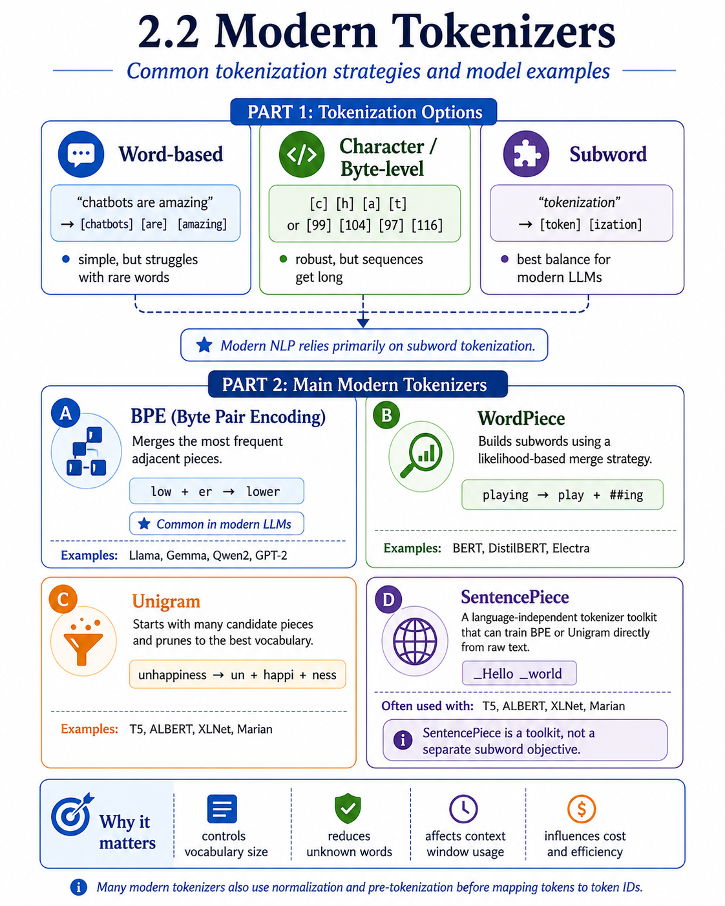

2.2 Modern Tokenization#
In practice, modern NLP relies primarily on subword tokenization, which offers a useful balance between word-level meaning and character-level flexibility.
Types of Tokenizers#

Fig. 8 Types of Tokenizers.#
Word-Based Tokenizers#
Word-based tokenization splits text primarily along whitespace and basic boundary markers.
Implementation: Often implemented using basic string operations, whitespace splitting, or simple shell utilities such (such as Unix
tr,sort, anduniq). Advantages: Easy to understand and efficient for small tasks.Drawbacks: Cannot reliably handle punctuation, contractions, or languages without whitespace boundaries. It also struggles with rare and unseen words, creating the out-of-vocabulary (OOV) problem.
Important
A purely word-based vocabulary grows quickly as more text is added, but it can never include every possible word form, misspelling, name, or domain-specific term.
Character-Based Tokenizers#
Character-based tokenization decomposes text into individual characters or raw UTF-8 bytes.
Some systems go even further and represent text at the byte level, allowing any input string to be encoded.
Advantages: Completely eliminates unknown words, as any input can be represented via base script characters or bytes.
Drawbacks: Produces much longer token sequences, which increases computational cost and often weakens higher-level semantic information.
Rule-Based and Regular Expression Tokenizers#
Rule-based tokenizers apply deterministic pattern matching to isolate words, punctuation, and other units.
These systems often rely on regular expressions to match patterns in text.
Regular Expressions: can describe:
character sets, such as
[A-Z]repetition, such as
*,+,?, or{n}boundaries, such as
^,$, and\b
Two common examples:
Penn Treebank Standard: separates punctuation and clitics in ways that support linguistic analysis (e.g., does and n’t)
GPT Pre-tokenization: some modern tokenizers use a regex-based pre-tokenization step before applying a subword algorithm (e.g., GPT-2’s regex using
\p{L}+for letters,\p{N}+for numbers, and explicit contraction rules) as a preliminary pre-tokenization step to prevent subword token algorithms from merging across word or punctuation boundaries.
# GPT-2 Pre-tokenizer Regex Pattern Structure
r"'s|'t|'re|'ve|'m|'ll|'d| ?\p{L}+| ?\p{N}+| ?[^\s\p{L}\p{N}]+|\s+(?!\S)|\s+"
Important
Regular expressions do not replace modern tokenization algorithms, but they play an important role in preprocessing and pre-tokenization.
Subword Tokenizers: Byte-Pair Encoding (BPE) and Variations#
Subword tokenizers combine the strength of word-based and character-based methods.
Byte-Pair Encoding (BPE)#
One of the most influential subword methods is Byte Pair Encoding (BPE).
Originally developed as a data compression method, BPE was later adapted for NLP and is now widely used in modern language models.
The basic idea is simple:
Start with small units, often characters or bytes.
Count which neighboring pairs occur most frequently.
Merge the most frequent pair into a new token.
Repeat this process until the vocabulary reaches the desired size.
BPE Training Example Steps: Initial Vocabulary: {e, n, r, s, t, w} Count adjacent pairs: Most frequent ‘n’ + ‘e’ –> Merge to ‘ne’ Count adjacent pairs: Most frequent ‘ne’ + ‘w’ –> Merge to ‘new’ Count adjacent pairs: Most frequent ‘r’ + ‘e’ –> Merge to ‘re’ Resulting Vocabulary expands with merged subword tokens (‘ne’, ‘new’, ‘re’, ‘renew’)
Note
Why BPE is useful?
BPE allows common words to remain whole while still breaking rare words into known parts.
lower`` may remain one token lowest` could become [“low”, “est”]
This makes BPE much more flexible than a strict word-based vocabulary.
Byte-Level BPE#
Some modern tokenizers use byte-level BPE, where the base vocabulary begins with byte values rather than alphabetic characters.
This has an important benefit:
every possible input string can be represented
the tokenizer avoids true unknown-token failures
This strategy is associated with GPT tokenization.
Other Subword Variants#
WordPiece
WordPiece is closely related to BPE, but it uses a different rule for selecting which token pairs to merge.
Instead of choosing only the most frequent pair, WordPiece chooses merges that are most useful according to a likelihood-based objective.
playing → play + ##ing
WordPiece is strongly associated with BERT-style models.
Unigram Language Modeling (ULM)
Unigram tokenization starts with a large inventory of possible subword units and gradually removes the least useful ones.
SentencePiece
SentencePiece is a tokenizer toolkit that can train BPE or Unigram models directly from raw text.
Multilingual Tokenization Challenges#
Tokenization is not equally efficient across languages.
Many modern tokenizers are trained on corpora dominated by English and other high-resource languages. As a result, their vocabularies often represent those languages more efficiently than languages with different scripts or richer morphology.
This can lead to over-segmentation, where a single word in one language is split into many small pieces. This over-segmentation increases token counts, reduces effective context window size, inflates API generation costs, and degrades semantic representation quality in non-English processing.
Important
A tokenizer is not a neutral preprocessing tool.
Its vocabulary and segmentation choices affect efficiency, usable context, and potentially model performance across languages.
Chapter Summary#
So far, we have focused on how different tokenizers divide text into units.
In the next part of this section, we will connect tokenization to modern language models more directly by examining how regular expressions work and how to use spacy toolkit for tokenization.